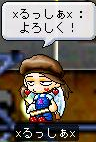
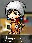

行ってきましたメイポッっぽヽ(ﾟ∀｡)ﾉ もー滅茶苦茶遊んできましたですよ。…明け方6時まで。
今回はSSが多いので重くなりすぎないようにページを前半後半に分けました。
生意気にも日々書いててサイズも大きくなってきた事だしね。
それではレポートいきまーす
夕方5時ごろIN。プレイ開始。
たった一週間やってないだけなのに随分久しぶりな感じですね。
さちょから火ブルの首輪を集めようとのお誘い。地獄温泉へと向かいました。
しかし開始2分後、さちょが飯落ち('A`)ありえん。
その後すぐに十二時さんが来てくれたのですが、ここは足場が悪すぎでやってらんないので親分にでも行くかー、って事で裏通りへ。
レベル89のTEVAはレベル95の親分からはぎりぎり吸えなく、一発だけ当てて十二時さんが片付ける！
という計画でしたが…2秒後即死。 ＿|￣|○
その後、夜のプラさんパーティに向かうにあたってレベル上げとこうかなーって思い、手下Dに行きました。
すごいね、メイポ。また新しい出会いがあったですよ！(*´∀`)
狩場の空きをみつけてしばらく狩ってると、向こう側からゾロゾロと全ての敵を引き連れて誰かやってきました。
彼の名は xるっしあx 。 強烈な印象を受けたよｗ
正直言うと彼はスナ付近のお友達ってぐらいしか知らなかったんですが…＾＾；るっしあの方は俺の事知っていてくれたらしくて…
「あ、TEVAさんだ。」って話しかけてくれました(´▽`)ﾓｴ(何
で、その後トモロク結んじゃいました(･∀･)
やべーって、いまだに新しい出会いがあるってのは幸せすぎ。
すっかりその存在を忘れてたんですが、丁度その時間は噂の4倍タイム！
…まー俺は2倍ですがね(´σд`)しっかり2倍のうまみを体験してきましたですよ。
現在の経験値は60%。さーどーするか、、、とか考えてたらゼロから武器庫のお誘いが。

で、えーっと
その
なんだっけ
あ、十二時さんを待ち続けて現時刻23時。「もーほっといてやるかー(･∀･)」
とか言ってたんですが、ぎりぎり参上ｗ
嘘ですよ、始めませんってｂ
えっと、、、その、、、メイポが俺を誘惑するんです。
さちょ曰くさんが諸事情により結構長い間メイポをお休みするらしく、19日土曜日にお見送り会が開催されるらしいのですがっがが。
俺も参加したいぞ。お見送りたいぞ。そしてそれに託けて遊びたいぞ。
INしちゃおうかな、、、。
しちゃっていいよね、、、？
うん、INする！(ﾟﾛﾟ)
INしちゃうぞーヽ(ﾟ∀｡)ﾉｱﾋｬﾋｬﾋｬ
…
甘い誘惑には勝てない駄目な奴、それが俺です(;´д`)>
だってだって、こんな人が待ってるんだぜ？行くしかないでしょ！！１？ヽ(ﾟ∀｡)ﾉ(関係無いと思われる[天の声]

太陽より月のほうが好きです、どうもTEVAです。
昨日は卒論の経過発表だったのでまた無駄に徹夜して完成させました。
っつーかいまだにテーマが絞りきれてないとか、、、やばすぎ。
先生にぼろくそに絞られてもうカスも出ねーよ ○|￣|＿
うーむ、、、以前のテーマでいけると思ったんだけどなぁ(-"-；
どんなことでも簡単にはいかないね。
昨夜は満月でしたね。
夕方5時ごろ、ぺったんこに凹んだ状態での帰宅中、ふと電車の窓から見えた月がでけーのなんのって。
黄色が強くてクレーターとかもくっきり。そしてすげー地球に近い感じのするでかさ。
これまた、ゾッとしたね。
あんな月を見たら、そりゃ魔力とかの存在でも信じたくもなるわ。昔の人はうまいこと言うね。
飯食って本読んで。
タバコでも吸おうかと思ってベランダに出たら、なんかめちゃくちゃ明るいんです。
本当に本が読めるぐらい明るいの。
びっくりして空を見上げたら、今度の月はうってかわって真っっ白な月。
気温が低くて空気も澄んでて、、、大気中に邪魔するものは何も無いって感じかな。
すげーの。本当にすげーの。
月が発する光が全部届いている感じで。
「神々しいってこういう事を言うんだー、、、」
っと、TEVAは馬鹿面していつまでも見上げていましたとさｗ
ﾍｯｸｼ
#apt-get install 気合
This program depend on me, and need the "Enough time"
…install Error.
#apt-get install "Enough time"
Sorry, can't find.
Try again, please.
…install Error.
＿|￣|○